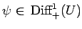
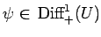

Inhalt Index DeskTop Bronstein

 Dynamische Systeme und Chaos Gewöhnliche Differentialgleichungen und Abbildungen Strukturelle Stabilität (Robustheit)
Dynamische Systeme und Chaos Gewöhnliche Differentialgleichungen und Abbildungen Strukturelle Stabilität (Robustheit)


Im Falle von zeitdiskreten Systemen (17.3), d.h. von Abbildungen , sei eine beschränkte, offene und zusammenhängende Menge mit glattem Rand. Sei Diff1(U) der metrische Raum aller Diffeomorphismen auf  , versehen mit der bezüglich U definierten C1-Metrik. Die Menge Diff bestehe aus denjenigen Diffeomorphismen
, versehen mit der bezüglich U definierten C1-Metrik. Die Menge Diff bestehe aus denjenigen Diffeomorphismen  , für die gilt. Die Abbildung (und damit das dynamische System (17.3)) heißt strukturstabil, wenn es ein
, für die gilt. Die Abbildung (und damit das dynamische System (17.3)) heißt strukturstabil, wenn es ein  gibt, so daß jede andere Abbildung  mit
gibt, so daß jede andere Abbildung  mit  topologisch konjugiert zu
topologisch konjugiert zu  ist.
ist.